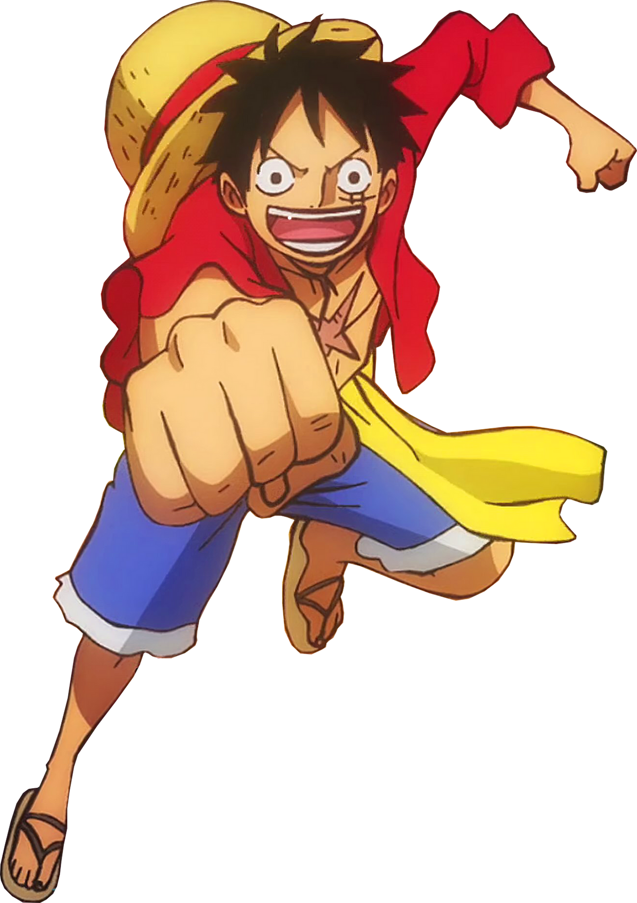
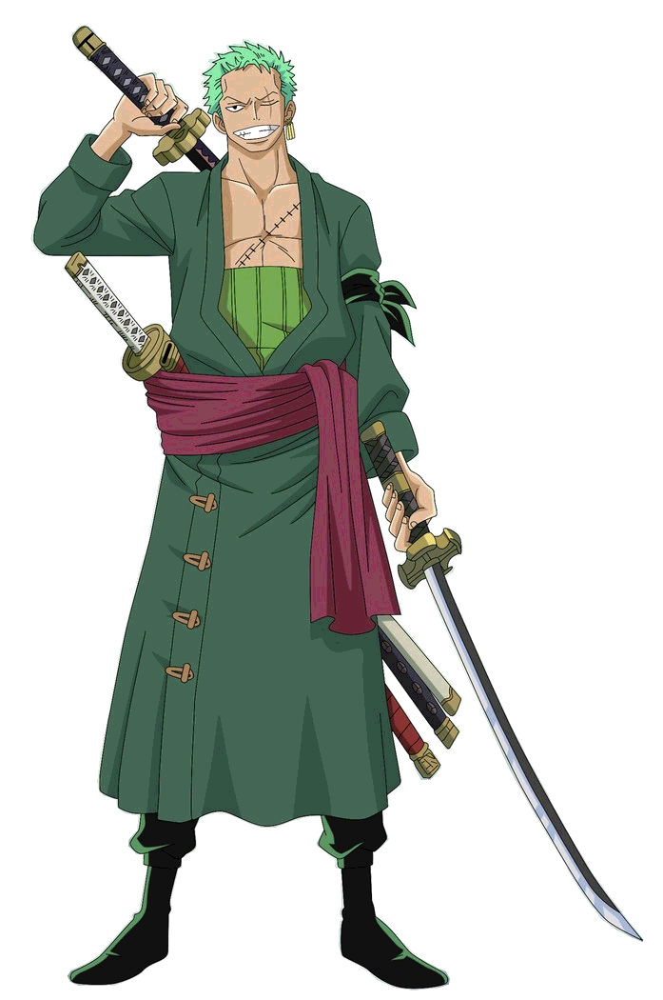
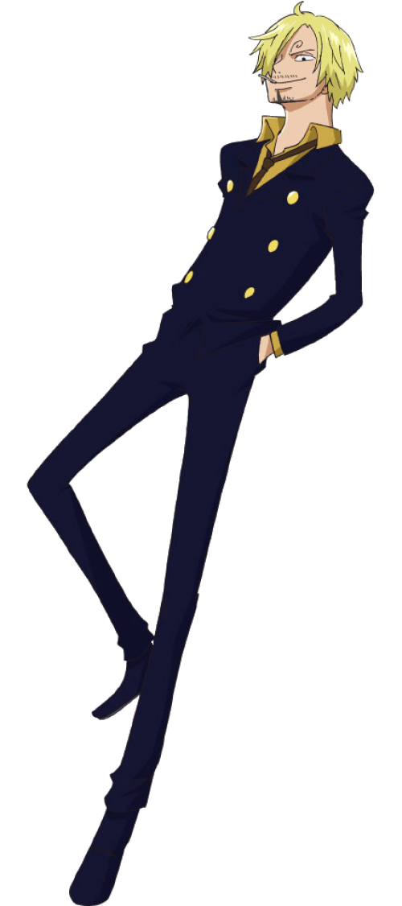

Post-Timeskip
Home Page
Pre-Timeskip
Post-Timeskip
Post-Wano
Contact Us!
These are the descriptions of the three main Straw Hats post-timeskip:
Monkey D. Luffy
"Son of the Revolutionary Dragon"

Fighting Style: Devil Fruit
Devil Fruit: Gum-Gum Fruit
Abilities: Body has the properties of rubber, as using all three types of haki
Special Abilities: Gear Second and Gear Third, as well as a new form, Gear Four, which allows Luffy to combine both his rubber body and haki, in order to create multiple different forms, such as Bounceman and Snakeman
Strengths: Learning the three types of haki allows Luffy to more easily defeat enemies, as well as use new moves
Weaknesses: Gear Four uses haki up extremely fast, leaving Luffy unable to use haki for ten minutes after use of Gear Four
Roronoa Zoro
"Right-Hand man of Luffy"

Fighting Style: Three Sword Style
Swords: Wado Ichimonji, Sandai Kitetsu, Shusui
Abilities: Can use both observation and armament haki, but mainly uses armament
Special Abilities: With haki, Zoro can make even more powerful attacks
Strengths: Due to training with the Worlds Strongest Swordsman, Dracule Mihawk, Zoro has increase his swordsmanship skill and his haki skill
Weaknesses: Refer to pre-timeskip for weaknesses
Vinsmoke Sanji
"Third son of Vinsmoe Judge"

Fighting Style: Black Leg Style
Weapons: Legs
Abilities: Use of armament and observation haki allows for Sanji to use stronger attacks
Special Abilities: His Vinsmoke raid suit allows Sanji to move even faster and use even stronger attacks
Strengths: Extreme speed, expecially with his raid suit
Weaknesses: He worries a lot about his father figure, "Red Foot" Zeff, which leads him to easily give up if Zeff is threatened